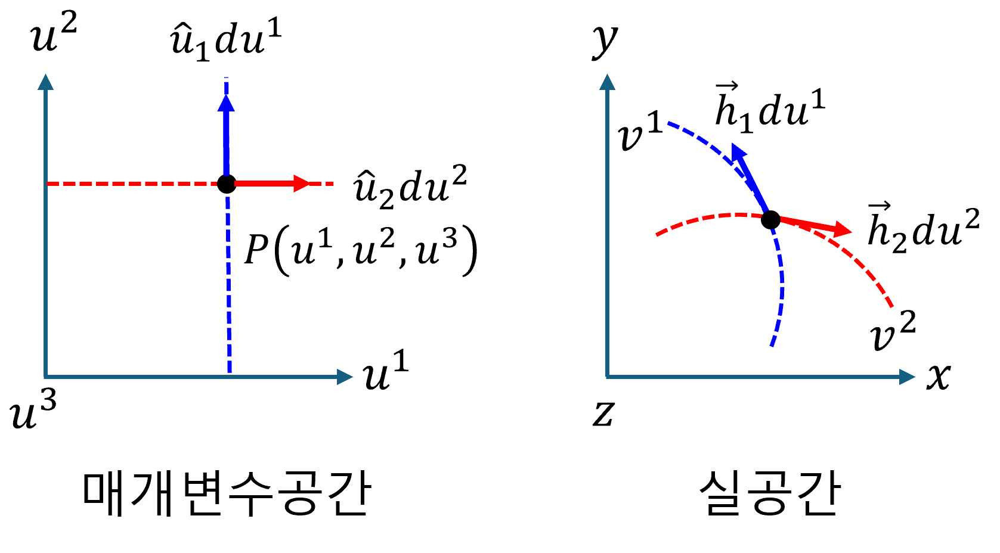
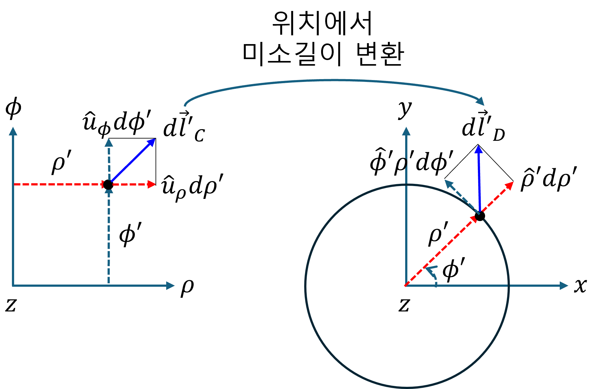
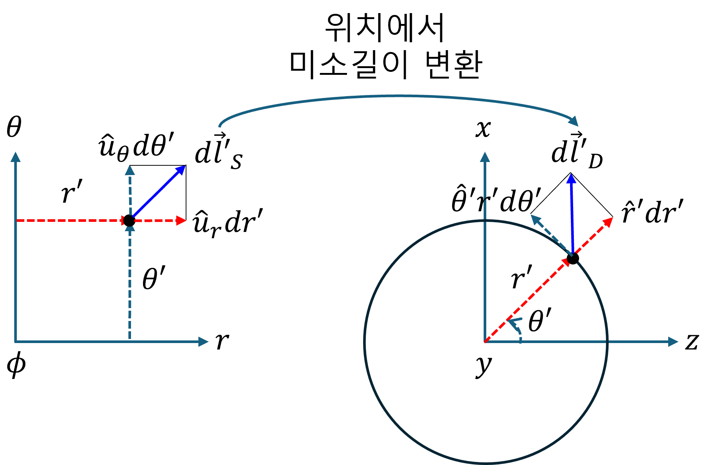
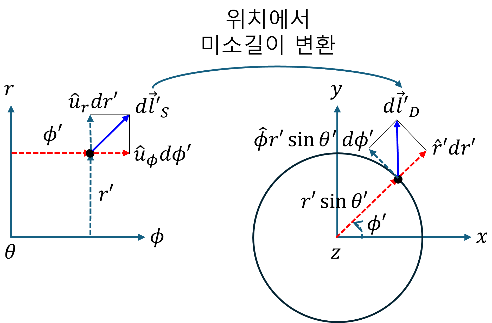

(a) Mapping III - Jacobian
중요사항: [매개변수 공간] → [실 공간] 에 대한 것으로 미소변위벡터 변환(mapping) 을 다룬다.
1. Jacobian
Jacobian은 매개변수 공간의 미소변위벡터를 실 공간의 미소변위벡터로 변환(mapping)하는 연산자이다.
- u 매개변수 공간 미소변위벡터
- v 실 공간 매핑 위치에서, 미소변위벡터
- 변환(mapping) 연산자 작용, 매핑 위치에 해당하는 [u 매개변수 공간] 미소변화량벡터 du → [v 좌표계 공간] 미소변위벡터 dv
수학적 벡터로 표현하면,
$$ \begin{bmatrix} dv_1 \\ dv_2 \\ dv_3 \end{bmatrix} =du_1\begin{bmatrix} \cfrac{\partial v_1}{\partial u_1} \\ \cfrac{\partial v_2}{\partial u_1} \\ \cfrac{\partial v_3}{\partial u_1} \end{bmatrix}+du_2 \begin{bmatrix} \cfrac{\partial v_1}{\partial u_2} \\ \cfrac{\partial v_2}{\partial u_2} \\ \cfrac{\partial v_3}{\partial u_2} \end{bmatrix}+du_3 \begin{bmatrix} \cfrac{\partial v_1}{\partial u_3} \\ \cfrac{\partial v_2}{\partial u_3} \\ \cfrac{\partial v_3}{\partial u_3} \end{bmatrix} =\begin{bmatrix} \cfrac{\partial v_1}{\partial u_1} & \cfrac{\partial v_1}{\partial u_2} & \cfrac{\partial v_1}{\partial u_3} \\ \cfrac{\partial v_2}{\partial u_1} & \cfrac{\partial v_2}{\partial u_2} & \cfrac{\partial v_2}{\partial u_3} \\ \cfrac{\partial v_3}{\partial u_1} & \cfrac{\partial v_3}{\partial u_2} & \cfrac{\partial v_3}{\partial u_3} \end{bmatrix} \begin{bmatrix} du_1 \\ du_2 \\ du_3 \end{bmatrix} $$여기에서, 3x3 행렬을 Jacobian 이라고 한다. Jacobian의 각 열 벡터는 매개변수 공간의 각 축이 실 공간으로 변환(mapping)될 때 만들어지는 벡터이다. 이 벡터들이 해당 지점에서 실 공간의 새로운 기준 방향들(기저)을 형성한다.suffix notation을 사용하여 각 열벡터 성분에 대해 아래와 같이 표현할 수 있으며, 이와 관련한 기하학적 해석을 해보자.
$$ \vec{h}_i=\frac{\partial\vec{v}}{\partial u_i} \text{, 매개변수의 미소변화량에 대한 벡터 v의 미소변화량 - 궤적의 접선 벡터} $$2. Scale factor
Jacobian 의 각 열벡터는 실 공간에 유도된 새로운 기저 벡터 라고 하였다. 위의 기저를 normalize 하고, 실 공간의 미소길이벡터 $d\vec{v}$ 를 표현해 보자.
$$ d\vec{v} =du_i\frac{\partial\vec{v}}{\partial u_i} =du_i\vec{h}_i =\hat{e}_ih_idu_i $$$$ \vec{h}_{i}=\frac{\partial\vec{v}}{\partial u_{i}},\quad h_{i}=\left|\vec{h}_{i}\right|,\quad \hat{e}_{i}=\frac{\vec{h}_{i}}{h_{i}} $$이전 챕터에서 학습한 바, scale factor $h_i$ 를 매개변수 공간 $u_i$ 방향의 미소 변화량에 곱하면, 실 공간에서의 미소 길이가 된다.
3. [원통좌표계 매개변수 공간] → [실 공간]
- 매개변수 공간 미소변위벡터
- 실 공간 매핑 위치의 미소변위벡터
- Mapping, 매핑 위치 에서의 [원통좌표계 매개변수 공간] → [실 공간]
하나하나 씩 살펴보자.
$$ \vec{h}_{\rho} =\begin{bmatrix} \cfrac{\partial x'}{\partial \rho} \\ \cfrac{\partial y'}{\partial \rho} \\ \cfrac{\partial z'}{\partial \rho} \end{bmatrix} =\begin{bmatrix} \cfrac{\partial}{\partial \rho} (\rho\cos\phi) \\ \cfrac{\partial}{\partial \rho} (\rho\sin\phi) \\ \cfrac{\partial}{\partial \rho} (z) \end{bmatrix} =\begin{bmatrix} \cos\phi \\ \sin\phi \\ 0 \end{bmatrix} \implies h_\rho=1, \hat{\rho} =\begin{bmatrix} \cos\phi \\ \sin\phi \\ 0 \end{bmatrix} $$$$ \vec{h}_{\phi} =\begin{bmatrix} \cfrac{\partial x'}{\partial \phi} \\ \cfrac{\partial y'}{\partial \phi} \\ \cfrac{\partial z'}{\partial \phi} \end{bmatrix} =\begin{bmatrix} \cfrac{\partial}{\partial \phi} (\rho\cos\phi) \\ \cfrac{\partial}{\partial \phi} (\rho\sin\phi) \\ \cfrac{\partial}{\partial \phi} (z) \end{bmatrix} =\rho\begin{bmatrix} -\sin\phi \\ \cos\phi \\ 0 \end{bmatrix} \implies h_\phi=\rho, \hat{\phi} =\begin{bmatrix} -\sin\phi \\ \cos\phi \\ 0 \end{bmatrix} $$$$ \vec{h}_{z} =\begin{bmatrix} \cfrac{\partial x'}{\partial z} \\ \cfrac{\partial y'}{\partial z} \\ \cfrac{\partial z'}{\partial z} \end{bmatrix} =\begin{bmatrix} \cfrac{\partial}{\partial z} (\rho\cos\phi) \\ \cfrac{\partial}{\partial z} (\rho\sin\phi) \\ \cfrac{\partial}{\partial z} (z) \end{bmatrix} =\begin{bmatrix} 0 \\ 0 \\ 1 \end{bmatrix} \implies h_z=1, \hat{z} =\begin{bmatrix} 0 \\ 0 \\ 1 \end{bmatrix} $$정리하면,
$$ d\vec{u}\xrightarrow{\text{mapping: }\cdot\nabla_{u}\vec{v}}d\vec{v} $$$$ d\vec{v} =\begin{bmatrix} \cos\phi \\ \sin\phi \\ 0 \end{bmatrix}d\rho +\begin{bmatrix} -\sin\phi \\ \cos\phi \\ 0 \end{bmatrix}\rho d\phi +\begin{bmatrix} 0 \\ 0 \\ 1 \end{bmatrix}dz $$$$ =\hat{\rho}d\rho+\hat{\phi}\rho d\phi+\hat{z}dz $$$$ =\hat{x}\left(\cos\phi d\rho-\rho\sin\phi d\phi\right) +\hat{y}\left(\sin\phi d\rho+\rho\cos\phi d\phi\right) +\hat{z}dz $$아래 이미지의 이해는 매우 중요하다.
4. [구좌표계 매개변수 공간] → [실 공간]
- 매개변수 공간 에서, 매핑 위치에서 미소변위벡터
- 실 공간 에서, 매핑 위치에서 미소변위벡터
- Mapping, 매핑 위치 에서의 [원통좌표계 매개변수 공간] → [데카르트좌표계 실 공간]
하나하나 씩 살펴보자.
$$ \vec{h}_{r} =\begin{bmatrix} \cfrac{\partial x'}{\partial r} \\ \cfrac{\partial y'}{\partial r} \\ \cfrac{\partial z'}{\partial r} \end{bmatrix} =\begin{bmatrix} \cfrac{\partial}{\partial r} (r\sin\theta\cos\phi) \\ \cfrac{\partial}{\partial r} (r\sin\theta\sin\phi) \\ \cfrac{\partial}{\partial r} (r\cos\theta) \end{bmatrix} =\begin{bmatrix} \sin\theta\cos\phi \\ \sin\theta\sin\phi \\ \cos\theta \end{bmatrix} \implies h_r=1, \hat{r} =\begin{bmatrix} \sin\theta\cos\phi \\ \sin\theta\sin\phi \\ \cos\theta \end{bmatrix} $$$$ \vec{h}_{\theta} =\begin{bmatrix} \cfrac{\partial x'}{\partial \theta} \\ \cfrac{\partial y'}{\partial \theta} \\ \cfrac{\partial z'}{\partial \theta} \end{bmatrix} =\begin{bmatrix} \cfrac{\partial}{\partial \theta} (r\sin\theta\cos\phi) \\ \cfrac{\partial}{\partial \theta} (r\sin\theta\sin\phi) \\ \cfrac{\partial}{\partial \theta} (r\cos\theta) \end{bmatrix} =r\begin{bmatrix} \cos\theta\cos\phi \\ \cos\theta\sin\phi \\ -\sin\theta \end{bmatrix} \implies h_\theta= r, \hat{\theta} =\begin{bmatrix} \cos\theta\cos\phi \\ \cos\theta\sin\phi \\ -\sin\theta \end{bmatrix} $$$$ \vec{h}_{\phi} =\begin{bmatrix} \cfrac{\partial x'}{\partial \phi} \\ \cfrac{\partial y'}{\partial \phi} \\ \cfrac{\partial z'}{\partial \phi} \end{bmatrix} =\begin{bmatrix} \cfrac{\partial}{\partial \phi} (r\sin\theta\cos\phi) \\ \cfrac{\partial}{\partial \phi} (r\sin\theta\sin\phi) \\ \cfrac{\partial}{\partial \phi} (r\cos\theta) \end{bmatrix} =r\sin\theta\begin{bmatrix} -\sin\phi \\ \cos\phi \\ 0 \end{bmatrix} \implies h_\phi= r\sin\theta, \hat{\phi} =\begin{bmatrix} -\sin\phi \\ \cos\phi \\ 0 \end{bmatrix} $$정리하면,
$$ d\vec{u}\xrightarrow{\text{mapping: }\cdot\nabla_{u}\vec{v}}d\vec{v} $$$$ d\vec{v} =\begin{bmatrix} \sin\theta\cos\phi \\ \sin\theta\sin\phi \\ \cos\theta \end{bmatrix}dr +\begin{bmatrix} \cos\theta\cos\phi \\ \cos\theta\sin\phi \\ -\sin\theta \end{bmatrix}rd\theta +\begin{bmatrix} -\sin\phi \\ \cos\phi \\ 0 \end{bmatrix}r\sin\theta d\phi $$$$ =\hat{r}dr+\hat{\theta}rd\theta+\hat{\phi}r\sin\theta d\phi $$아래 이미지의 이해는 매우 중요하다.
 